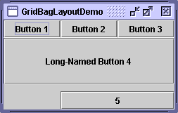
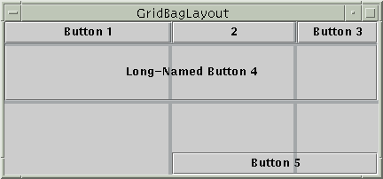
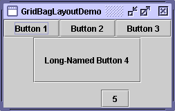
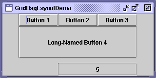

Feedback Form
|
|
Start of Tutorial > Start of Trail > Start of Lesson |
Search
Feedback Form |
Here's a picture of an example that usesGridBagLayout.
 You can run GridBagLayoutDemo using JavaTM Web Start
. Its code is in
GridBagLayoutDemo.java.
GridBagLayoutis one of the most flexible — and complex — layout managers the Java platform provides. AGridBagLayoutplaces components in a grid of rows and columns, allowing specified components to span multiple rows or columns. Not all rows necessarily have the same height. Similarly, not all columns necessarily have the same width. Essentially,GridBagLayoutplaces components in rectangles (cells) in a grid, and then uses the components' preferred sizes to determine how big the cells should be.The following figure shows the grid for the preceding applet. As you can see, the grid has three rows and three columns. The button in the second row spans all the columns; the button in the third row spans the two right columns.
If you enlarge the window as shown in the following figure, you'll notice that the bottom row, which contains Button 5, gets all the new vertical space. The new horizontal space is split evenly among all the columns. This resizing behavior is based on weights the program assigns to individual components in the
GridBagLayout. You'll also notice that each component takes up all the available horizontal space — but not (as you can see with button 5) all the available vertical space. This behavior is also specified by the program. [PENDING: This figure will be updated to reflect the changed appearance of the demo.]The way the program specifies the size and position characteristics of its components is by specifying constraints for each component, To specify constraints, you set instance variables in a
GridBagConstraintsobject and tell theGridBagLayout(with thesetConstraintsmethod) to associate the constraints with the component.The following sections explain the constraints you can set and provide examples.
The following code is typical of what goes in a container that uses aGridBagLayoutAs you might have guessed from the above example, you can reuse the sameJPanel pane = new JPanel(new GridBagLayout()); GridBagConstraints c = new GridBagConstraints(); //For each component to be added to this container: //...Create the component... //...Set instance variables in the GridBagConstraints instance... pane.add(theComponent, c);GridBagConstraintsinstance for multiple components, even if the components have different constraints. TheGridBagLayoutextracts the constraint values and doesn't use theGridBagConstraintsagain. You must be careful, however, to reset theGridBagConstraintsinstance variables to their default values when necessary.
Note: The following discussion assumes that theGridBagLayoutcontrols a container that has a left-to-right component orientation.You can set the following
GridBagConstraints
gridx,gridy- Specify the row and column at the upper left of the component. The leftmost column has address
gridx=0and the top row has addressgridy=0. UseGridBagConstraints.RELATIVE(the default value) to specify that the component be placed just to the right of (forgridx) or just below (forgridy) the component that was added to the container just before this component was added. We recommend specifying thegridxandgridyvalues for each component; this tends to result in more predictable layouts.
gridwidth,gridheight- Specify the number of columns (for
gridwidth) or rows (forgridheight) in the component's display area. These constraints specify the number of cells the component uses, not the number of pixels it uses. The default value is 1. UseGridBagConstraints.REMAINDERto specify that the component be the last one in its row (forgridwidth) or column (forgridheight). UseGridBagConstraints.RELATIVEto specify that the component be the next to last one in its row (forgridwidth) or column (forgridheight).Note:
GridBagLayoutdoesn't allow components to span multiple rows unless the component is in the leftmost column or you've specified positivegridxandgridyvalues for the component.
fill- Used when the component's display area is larger than the component's requested size to determine whether and how to resize the component. Valid values (defined as
GridBagConstraintsconstants) areNONE(the default),HORIZONTAL(make the component wide enough to fill its display area horizontally, but don't change its height),VERTICAL(make the component tall enough to fill its display area vertically, but don't change its width), andBOTH(make the component fill its display area entirely).
ipadx,ipady- Specifies the internal padding: how much to add to the minimum size of the component. The default value is zero. The width of the component will be at least its minimum width plus
ipadx*2pixels, since the padding applies to both sides of the component. Similarly, the height of the component will be at least its minimum height plusipady*2pixels.
insets- Specifies the external padding of the component -- the minimum amount of space between the component and the edges of its display area. The value is specified as an
Insets
anchor- Used when the component is smaller than its display area to determine where (within the area) to place the component. Valid values (defined as
GridBagConstraintsconstants) areCENTER(the default),PAGE_START,PAGE_END,LINE_START,LINE_END,FIRST_LINE_START,FIRST_LINE_END,LAST_LINE_END, andLAST_LINE_START.Here is a picture of how these values are interpreted in a container that has the default, left-to-right component orientation. [PENDING: A real figure will go here. It will put a hint of a button border around each constant, so that it's obvious that the component is hugging the specified part of its display area.]
------------------------------------------------- |FIRST_LINE_START PAGE_START FIRST_LINE_END| | | | | |LINE_START CENTER LINE_END| | | | | |LAST_LINE_START PAGE_END LAST_LINE_END| -------------------------------------------------
Version note: ThePAGE_*and*LINE_*constants were introduced in 1.4. Previous releases require values named after points of the compass. For example,NORTHEASTindicates the top-right part of the display area. We recommend that you use the new constants, instead, since they enable easier localization.
weightx,weighty- Specifying weights is an art that can have a significant impact on the appearance of the components a
GridBagLayoutcontrols. Weights are used to determine how to distribute space among columns (weightx) and among rows (weighty); this is important for specifying resizing behavior.Unless you specify at least one nonzero value for
weightxorweighty, all the components clump together in the center of their container. This is because when the weight is 0.0 (the default), theGridBagLayoutputs any extra space between its grid of cells and the edges of the container.Generally weights are specified with 0.0 and 1.0 as the extremes: the numbers in between are used as necessary. Larger numbers indicate that the component's row or column should get more space. For each column, the weight is related to the highest
weightxspecified for a component within that column, with each multicolumn component's weight being split somehow between the columns the component is in. Similarly, each row's weight is related to the highestweightyspecified for a component within that row. Extra space tends to go toward the rightmost column and bottom row.The next section discusses constraints in depth, in the context of explaining how the example program works.
Here, again, is a picture of the GridBagLayoutDemo application, which you can run using JavaTM Web StartThe following code creates the
GridBagLayoutand the components it manages. You can find the entire source file inGridBagLayoutDemo.javaJButton button; pane.setLayout(new GridBagLayout()); GridBagConstraints c = new GridBagConstraints(); c.fill = GridBagConstraints.HORIZONTAL; button = new JButton("Button 1"); c.weightx = 0.5; c.gridx = 0; c.gridy = 0; pane.add(button, c); button = new JButton("Button 2"); c.gridx = 1; c.gridy = 0; pane.add(button, c); button = new JButton("Button 3"); c.gridx = 2; c.gridy = 0; pane.add(button, c); button = new JButton("Long-Named Button 4"); c.ipady = 40; //make this component tall c.weightx = 0.0; c.gridwidth = 3; c.gridx = 0; c.gridy = 1; pane.add(button, c); button = new JButton("5"); c.ipady = 0; //reset to default c.weighty = 1.0; //request any extra vertical space c.anchor = GridBagConstraints.PAGE_END; //bottom of space c.insets = new Insets(10,0,0,0); //top padding c.gridx = 1; //aligned with button 2 c.gridwidth = 2; //2 columns wide c.gridy = 2; //third row pane.add(button, c);This example uses one
GridBagConstraintsinstance for all the components theGridBagLayoutmanages. Just before each component is added to the container, the code sets (or resets to default values) the appropriate instance variables in theGridBagConstraintsobject. It then adds the component to its container, specifying theGridBagConstraintsobject as the second argument to theaddmethod.For example, to make button 4 be extra tall, the example has this code:
And before setting the constraints of the next component, the code resets the value ofc.ipady = 40;ipadyto the default:c.ipady = 0;Here's a table that shows all the constraints for each component in GridBagLayoutDemo's content pane. Values that aren't the default are marked in boldface. Values that are different from those in the previous table entry are marked in italics.
Note: The Tutorial's examples used to specify the constraints object a different way, which you might see in other programs as well. Rather than specifying the constraints with theaddmethod, our examples invoked thesetConstraintsmethod on theGridBagLayoutobject. For example:GridBagLayout gridbag = new GridBagLayout(); pane.setLayout(gridbag); ... gridbag.setConstraints(button, c); pane.add(button);
Component Constraints All components Button 1 Button 2 Button 3 Button 4 Button 5 GridBagLayoutDemo has two components that span multiple columns (buttons 4 and 5). To make button 4 tall, we added internal padding (
ipady) to it. To put space between buttons 4 and 5, we used insets to add a minimum of 10 pixels above button 5, and we made button 5 hug the south edge of its cell.All the components in the
panecontainer are as wide as possible, given the cells that they occupy. The program accomplishes this by setting theGridBagConstraintsfillinstance variable toGridBagConstraints.HORIZONTAL, leaving it at that setting for all the components. If the program didn't specify the fill, the buttons would be at their natural width, like this: When you enlarge GridBagLayoutDemo's window, the columns grow proportionately. This is because each component in the first row, where each component is one column wide, has
weightx = 1.0. The actual value of these components'weightxis unimportant. What matters is that all the components, and consequently, all the columns, have an equal weight that is greater than 0. If no component managed by theGridBagLayouthadweightxset, then when the components' container was made wider, the components would stay clumped together in the center of the container, like this: Note that if you enlarge the window, the last row is the only one that gets taller. This is because only button 5 has
weightygreater than zero.
[PENDING: This section will be changed to use standard API tables.]The
GridBagLayoutandGridBagConstraintsclasses each have only one constructor, with no arguments. Instead of invoking methods on aGridBagConstraintsobject, you manipulate its instance variables, as described in Specifying Constraints. Generally, the only method you invoke on aGridBagLayoutobject issetConstraints, as demonstrated in The Example Explained.
You can find examples of usingGridBagLayoutthroughout this tutorial. The following table lists a few.
Example Where Described Notes GridBagLayoutDemoThis section Uses many features — weights, insets, internal padding, horizontal fill, exact cell positioning, multi-column cells, and anchoring (component positioning within a cell). TextSamplerDemoUsing Text Components Aligns two pairs of labels and text fields, plus adds a label across the full width of the container. ContainerEventDemoHow to Write a Container Listener Positions five components within a container, using weights, fill, and relative positioning.
|
|
Start of Tutorial > Start of Trail > Start of Lesson |
Search
Feedback Form |
Copyright 1995-2004 Sun Microsystems, Inc. All rights reserved.